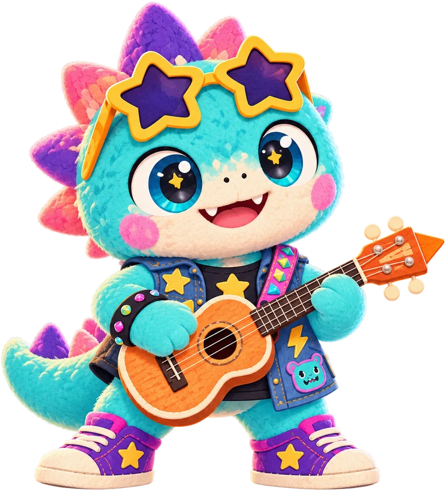

Listen to the monster, then strum back!
Grown-up: allow the microphone. Sound is checked on this phone and never recorded or sent.No mic? Tapping the screen counts as a strum. Hold ⚙️ for settings.
Settings stay on this phone.